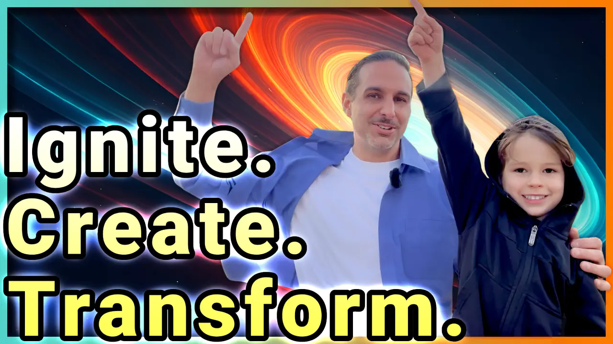

🔥 The Power of Creativity
Ever stared at a blank page, waiting for inspiration to strike? Creativity isn’t a mystical force—it’s a skill you can develop. Whether you're an artist, entrepreneur, or problem solver, unlocking your imagination can transform your life.
🌟 Unlocking Your Creative Mindset
Creativity isn’t just about talent—it’s about mindset. The way you approach challenges, ideas, and even failure determines your ability to innovate and think outside the box.
Here are three key mindset shifts that can help unlock your creative potential:
- Shift from Perfection to Progress – Waiting for the "perfect idea" can lead to stagnation. Instead, embrace small, imperfect actions that build momentum.
- Reframe Failure as Learning – Every creative breakthrough is built on a foundation of past attempts. Treat missteps as stepping stones rather than roadblocks.
- Develop Playfulness and Experimentation – Some of the most innovative ideas come from play. Whether it's brainstorming without judgment or trying unconventional methods, curiosity fuels creativity.
By adopting these perspectives, you’ll free yourself from creative roadblocks and open the door to limitless possibilities.
🚀 Visionaries Who Transformed the World
Throughout history, bold thinkers have reshaped industries and changed lives. Consider:
- Phil Knight - Revolutionized athletic wear with Nike.
- Jennifer Hyman & Jennifer Fleiss - Made luxury fashion accessible with Rent the Runway.
- Marie Curie - Overcame immense challenges to advance science.
- David Lynch - Blended surreal storytelling with mindfulness.
- Christina Tosi - Reinvented baking with Milk Bar’s playful creations.
These individuals prove that creativity thrives on curiosity, persistence, and the courage to challenge norms.
🧠 The Science of Creativity
Modern research reveals how creativity works. Key insights include:
- The prefrontal cortex and default mode network generate new ideas.
- Divergent thinking activates when we connect unrelated concepts.
- Mindfulness and play boost creative problem-solving.
Studies also show that high emotional intelligence (EQ) enhances creativity by fostering resilience and adaptability.
🎯 10 Steps to Spark Your Creativity
- Embrace Curiosity – Explore new ideas and hobbies.
- Create a Safe Space – Keep a journal to capture ideas.
- Show Up Daily – Creativity thrives with consistency.
- Adopt a Beginner’s Mindset – Learn from mistakes.
- Collaborate with Others – Fresh perspectives spark innovation.
- Prioritize Rest – Let your mind wander.
- Overcome Fear – Take small steps outside your comfort zone.
- Celebrate Progress – Recognize even small creative wins.
- Consume Inspiring Content – Read, watch, and explore widely.
- Trust the Process – Creativity is a journey, not an instant result.
✨ Why Creativity Matters
Creativity fuels innovation, solves problems, and enriches life. It’s not just for artists—it’s for everyone. Whether you're launching a business, writing a novel, or finding new ways to approach challenges, unlocking your imagination is key to growth and fulfillment.
On This Topic
📚 Explore powerful methods to boost creative thinking.
Check out the Related Resources below for books and more content on igniting your creativity and actionable steps to begin boosting creativity today.
Article for career/professional focus:
Unlock Your Creative Edge: How to Stand Out and Thrive in Your Career
Related Resources
- Episode
-  🔥 Ignite Your Imagination: 🔟 Proven Steps to Unleash Creativity ⚡️ 15/25 Unlock your creative potential with expert insights and powerful strategies. Overcome fear, spark innovation, and master the art of imagination to bring your best ideas to life!
- Episode Podcasts
- Apple Spotify YouTube
- Shorts
-
 ✨ Ignite Your Mind & Spark Creativity 🔥
Imagination is a skill you can spark and sustain, fueled by neuroscience and psychology, and discover stories of passion and perseverance that transformed industries. Unlock the science behind creativity and how imagination isn’t random but a trainable skill.
✨ Ignite Your Mind & Spark Creativity 🔥
Imagination is a skill you can spark and sustain, fueled by neuroscience and psychology, and discover stories of passion and perseverance that transformed industries. Unlock the science behind creativity and how imagination isn’t random but a trainable skill.
-
 🔥 Ignite Creative Revolutions ⚡️
Explore how visionary individuals have defied convention to spark revolutions in their fields, leaving a lasting impact on the world.
🔥 Ignite Creative Revolutions ⚡️
Explore how visionary individuals have defied convention to spark revolutions in their fields, leaving a lasting impact on the world.
- Books on Creative Breakthroughs
-
📘 Big Magic: Creative Living Beyond Fear by Elizabeth Gilbert
A guide to fearless creativity, Big Magic encourages embracing curiosity, overcoming fear, and cultivating a joyful creative process.
❧ Other editions: 📖 Paperback, 📱 Kindle, 🎧 Audiobook | 🗺️ Intl: French, German, Italian, Spanish (En Español) -
📗 The Shape of Things Unseen: A New Science of Imagination by Adam Zeman
This book explores the neuroscience of imagination, revealing how our brains generate creativity, mental imagery, and abstract thought.
❧ Other editions: 📖 Paperback, 📱 Kindle, 🎧 Audiobook -
📒 The Imagination Muscle: Where Good Ideas Come From (And How to Have More of Them) by Albert Read
Read argues that imagination is a skill that can be strengthened, offering insights and exercises to spark innovative thinking.
❧ Other editions: 📖 Paperback, 📱 Kindle -
📙 The Pathway to Flow: The New Science of Harnessing Creativity to Heal and Unwind the Body & Mind by Julia F. Christensen
Insights into why all of us are artists at heart, and how embracing this part of our humanity can help us regulate our nervous system, enjoy the current moment and reconnect with our bodies.
❧ Other editions: 🗺️ Intl: German